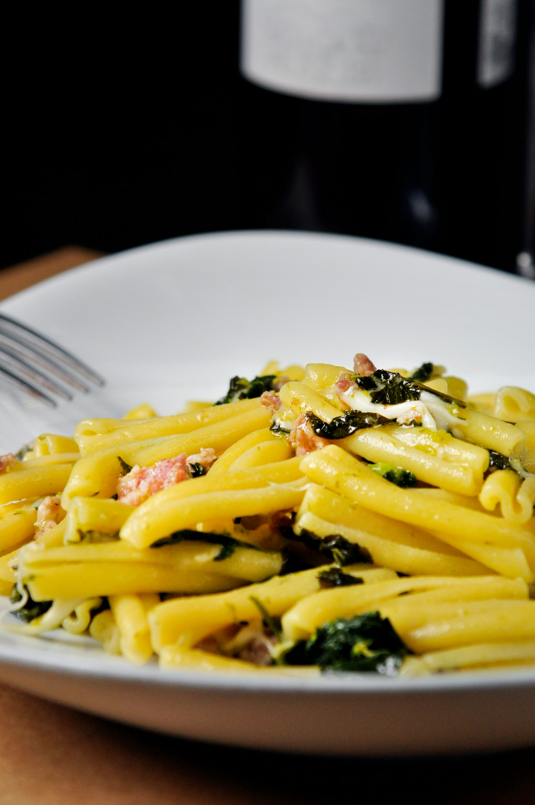

Classic Spaghetti Carabona recipe

Description
A traditional Italian pasta dish made with eggs, cheese, pancetta, and pepper. It's creamy, delicious, and quick to prepare.
Ingredients
- 200g spaghetti
- 100g pancetta
- 50g pecorino cheese, grated
- 2 large eggs
- A small bunch of fresh flat-leaf parsley, chopped (optional)
- 2 cloves of garlic, peeled and left whole
- 50g parmesan cheese, grated
- Freshly ground black pepper
- Salt

Instructions
- Prepare the Pasta: Cook the spaghetti in a large pot of salted boiling water until al dente, according to the package instructions.
- Cook the Pancetta: While the pasta is cooking, heat a large skillet over medium heat. Add the pancetta and whole garlic cloves. Cook until the pancetta is crispy and the garlic is browned. Remove the garlic cloves and discard.
- Mix the Eggs and Cheese: In a medium bowl, whisk the eggs and mix in the grated pecorino and parmesan cheese.
- Combine Pasta and Pancetta: Drain the spaghetti, reserving some of the pasta water. Add the spaghetti to the skillet with the pancetta and toss to combine.
- Create the Sauce: Remove the skillet from the heat and quickly pour in the egg and cheese mixture, tossing continuously to create a creamy sauce. If the mixture is too thick, add a splash of the reserved pasta water.
- Season and Serve: Season with freshly ground black pepper and salt to taste. Garnish with chopped parsley if desired. Serve immediately.
Related Recipe
- Fettuccine Alfredo: A rich and creamy pasta dish made with butter, cream, and parmesan cheese

- Cacio e Pepe: A simple Roman pasta dish made with just cheese and pepper.

- Carbonara with Peas: A variation of the classic recipe with the addition of sweet peas for extra texture and flavor.

About Authour
Chef Asiedu Yamoah: Yamoah is a renowned Ghanaian chef with over 20 years of experience in traditional Italian cuisine. He loves sharing his passion for food through his recipes and cooking classes.